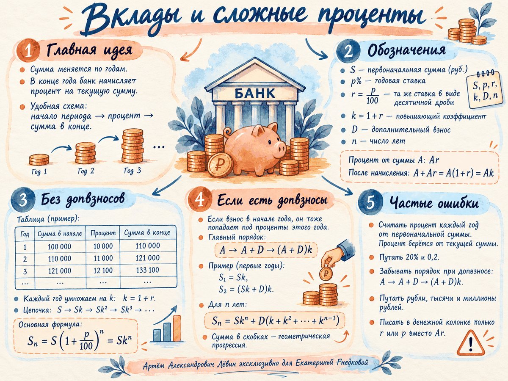

Первоначальная сумма
Деньги на счёте в начале модели.
Рабочий конспект · 06.10.26
Главная идея — считать деньги по периодам. Процент каждого года берётся от текущей суммы, поэтому надёжная опора здесь — таблица по годам и повышающий коэффициент.
Финансовый журнал
Без дополнительных взносов.
| Год | В начале | Процент | В конце |
|---|---|---|---|
| 1 | 100 000 | 10 000 | 110 000 |
| 2 | 110 000 | 11 000 | 121 000 |
| 3 | 121 000 | 12 100 | 133 100 |
Нажмите номер года: видно, что база для процентов меняется после каждого начисления.
Две короткие замены убирают лишние дроби из длинной записи и делают переходы между годами прозрачными.
Деньги на счёте в начале модели.
r = p / 100. Например, 10% соответствует 0,1.
k = 1 + r. После начисления сумма A превращается в Ak.
Сумма в конце года становится суммой в начале следующего. Поэтому один и тот же коэффициент k последовательно умножает текущий капитал.
| Год | Сумма в начале, руб. | Процент за год, руб. | Сумма в конце, руб. |
|---|---|---|---|
| 1 | 100 000 | 10 000 | 110 000 |
| 2 | 110 000 | 11 000 | 121 000 |
| 3 | 121 000 | 12 100 | 133 100 |
Именно такой порядок использовался на занятии: одинаковый взнос D делается в начале каждого года, начиная со второго.
Есть текущая сумма A.
Добавьте D: получаем A + D.
Начислите процент: (A + D)k.
Взносы сделаны в разные годы, поэтому каждый из них успевает умножиться на k разное число раз. Сумма в скобках — геометрическая прогрессия.
При большом числе лет запись можно сократить. Для 3–4 лет чек-лист рекомендует сначала составить таблицу и только затем упрощать выражение.
Перед вычислениями подчеркните временные слова и требуемые единицы ответа.
Взнос попадает под проценты этого года.
Сначала начисляются проценты, затем выполняется взнос или снятие.
В первый год дополнительного взноса нет.
Если ответ нужен в миллионах рублей, итог в рублях делится на 1 000 000.
Запятые можно убрать домножением числителя и знаменателя на степень 10, затем сократить дробь или выполнить деление уголком.
Проверяйте их до длинных вычислений.
Считать процент каждый год от первоначальной суммы. Он берётся от текущей суммы.
Писать в денежной колонке только r или p. Начисленная сумма равна Ar.
Забывать, что 20% = 0,2.
Перепутать порядок при пополнении: A → A + D → (A + D)k.
Потерять единицы: рубли, тысячи рублей или миллионы рублей.
Слишком рано раскрывать длинные скобки вместо использования r и k.
Постер собирает обозначения, формулы и типичные ошибки в одной визуальной схеме.

Используйте постер для быстрого повторения, а таблицу и лабораторию — когда нужно восстановить ход вычислений.
Открыть постер отдельноРешения оформляйте через обозначения и таблицу там, где она помогает контролировать порядок операций. Кнопки показывают только ответ.
В банк положили 100 000 руб. под 10% годовых на 3 года. Дополнительных взносов нет. Найдите сумму на счёте через 3 года.
В банк положили 200 000 руб. под 15% годовых на 3 года. В начале второго и третьего года вносят дополнительно по 10 000 руб. Найдите итоговую сумму.
Вклад 500 000 руб. открыт на 4 года под 8% годовых без дополнительных операций. Найдите сумму через 4 года.
Через 3 года на счёте оказалось 172 800 руб. Ставка всё время была 20% годовых, дополнительных операций не было. Какова первоначальная сумма вклада?
Вклад 100 000 руб. за 2 года вырос до 121 000 руб. Процентная ставка в оба года была одинаковой, дополнительных операций не было. Найдите годовую ставку.
Вклад 300 000 руб. открыт на 4 года под 12% годовых. В начале каждого года, начиная со второго, вносят по 20 000 руб. Найдите итоговую сумму.
На вклад положили 1,2 млн руб. под 10% годовых на 3 года без дополнительных операций. Ответ дайте в миллионах рублей.
Запишите итоговую сумму через S, k и D для вклада на 5 лет, если D вносится в начале каждого года, начиная со второго. Выражение раскройте как сумму степеней k.
Вклад 100 000 руб. открыт под 10% годовых на 3 года. В начале второго и третьего года вносили одну и ту же сумму D. Через 3 года на счёте оказалось 156 200 руб. Найдите D.
Сравните два вклада без дополнительных операций. Вклад A: 300 000 руб. под 10% на 3 года. Вклад B: 280 000 руб. под 12% на 3 года. Какой вклад даст большую итоговую сумму и на сколько рублей?
Отметьте пункты, которые можете воспроизвести без подсказки.